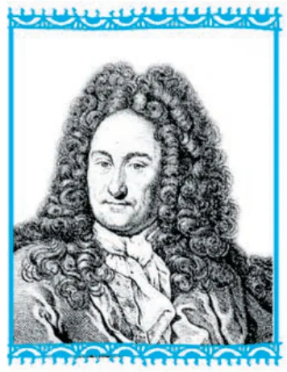

From finding slopes to finding areas — the two questions that give birth to Integral Calculus

Differential Calculus is centred on the concept of the derivative. The original motivation for the derivative was the problem of defining tangent lines to the graphs of functions and calculating the slope of such lines. Integral Calculus is motivated by the problem of defining and calculating the area of the region bounded by the graph of the functions.
If a function \(f\) is differentiable in an interval I, i.e., its derivative \(f'\) exists at each point of I, then a natural question arises: given \(f'\) at each point of I, can we determine the function?
The functions that could possibly have given function as a derivative are called anti derivatives (or primitive) of the function.
The formula that gives all these anti derivatives is called the indefinite integral of the function, and the process of finding anti derivatives is called integration.
Such type of problems arise in many practical situations. For instance, if we know the instantaneous velocity of an object at any instant, then there arises a natural question, i.e., can we determine the position of the object at any instant? There are several such practical and theoretical situations where the process of integration is involved.
The development of integral calculus arises out of the efforts of solving the problems of the following types:
These two problems lead to the two forms of the integrals, viz., indefinite and definite integrals, which together constitute the Integral Calculus.
There is a connection, known as the Fundamental Theorem of Calculus, between indefinite integral and definite integral which makes the definite integral a practical tool for science and engineering.
The definite integral is also used to solve many interesting problems from various disciplines like economics, finance and probability.
In this Chapter, we shall confine ourselves to the study of indefinite and definite integrals and their elementary properties including some techniques of integration.